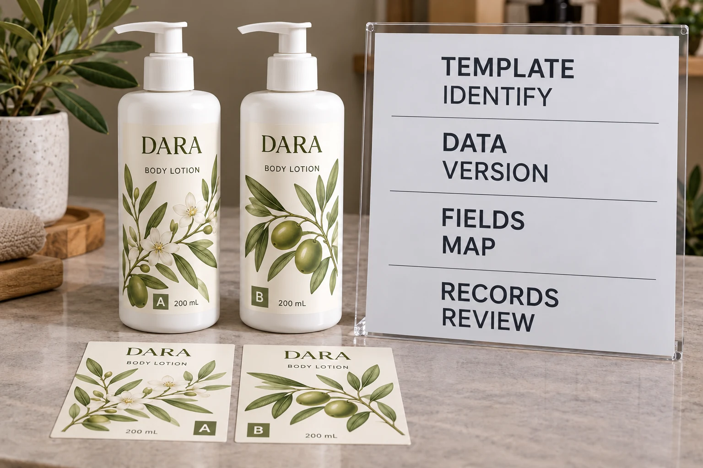

Decide whether the job is actually variable data
A range with a few separately approved fixed artwork files is one arrangement. A template that receives changing text or imagery from a data source is another. Ask the supplier which workflow is proposed before sending a spreadsheet as though its purpose were obvious.
Name the job's actual need. Is it changing a variant field, swapping an image, generating individualized records or something else? Do not request serialization when the project only needs distinct fixed labels. Equally, do not describe item-level changing information as a single ordinary repeat design.
Our skincare label system guide covers consistent range styling. Here the additional decision is how approved data becomes the correct content in a production output.
Identify the mapping, not only the spreadsheet
Adobe's Variables panel documentation describes merging CSV or XML data with a design, binding variables to named objects and previewing different data sets. It illustrates why a data source and its artwork mapping need reviewing together.
That software example is not a requirement to use Illustrator, nor evidence of YT Labels' installed workflow. Ask the proposed production party what format and validation it can accept for the actual project.
For each changing field, record its source column, intended artwork object and meaning. A heading such as name can be ambiguous if it could mean the product, variant, campaign or internal job reference. Use agreed field definitions that the data owner and artwork operator can both interpret.
Give every record an identifiable place in the release
Keep a stable record key or another agreed identifier so a review comment can refer to the exact record. Identify the data file and revision. A corrected spreadsheet should not circulate under an indistinguishable final filename while an earlier export remains in production discussion.
Define which fields are required and what a blank value means. Does an empty field intentionally remove content, indicate missing information or require a hold? Have the responsible brand and production parties agree the handling rather than letting the software choose an unintended default.
Where identifiers, language versions or controlled product copy are involved, have the responsible owner approve their mapping. Successful import demonstrates that a system read a file; it does not establish that the information belongs to the intended product.
Review rendered records with the difficult values included
Ask for outputs that represent the actual data variation, following the supplier's agreed review plan. Include relevant long and short text, different images, optional fields and the exceptions that could affect the layout. Identify which records were reviewed and what remains outside that review.
Look at the actual resulting label, not just the spreadsheet. Did a name wrap unexpectedly? Did a character change? Is the correct image paired with the intended variant? Does a blank field leave an unexplained space or an inappropriate remaining element?
If a problem appears, identify whether the data, the mapping or the template needs correction. Re-render the affected output and review the resulting file again. Avoid fixing only a screenshot while leaving the underlying source unchanged.

Use a matched data-and-artwork release record
The following editorial worksheet helps make the handoff traceable:
| Field | What to record | What cannot be inferred |
|---|---|---|
| Template | File, revision and changing objects | A correct master does not validate every record |
| Data source | Controlled file revision and accountable owner | A familiar filename does not establish current data |
| Mapping | Source fields linked to defined artwork objects | Column order alone is not an approved mapping |
| Record rules | Keys, required fields and agreed exception treatment | Import success is not content approval |
| Rendered review | Identified outputs, observations and reviewer | One sample does not establish every variation |
| Correction | Changed source/template and replacement output | A manual preview fix may not alter production |
| Release | Matched accepted files and remaining limitations | Approval should not silently follow a new revision |
Complete the record with the actual workflow. This guide sets no universal data format, sampling count or automatic acceptance rule. If the parties cannot identify which dataset produced the reviewed output, resolve that gap before release.
Keep data approval separate from coding and linked content
If changing information will be added later at the filling line, the batch-code panel guide addresses the relevant surface and operator handoff. A template merge and a later coding operation can occur at different stages.
If a changing field contains a web address, use the QR destination approval guide for destination ownership and maintenance. Correctly merging an address does not establish that the linked content is approved or will remain reachable.
Neither variable printing nor a unique-looking number by itself establishes authentication, security or traceability across a business system. Those projects need separately defined functions and evidence; do not attach those claims to a layout workflow.
Let the simpler fixed-file route remain an option
Consider a hypothetical range with two stable designs and a straightforward fixed-file approval process. Separate final artwork may be entirely appropriate. Adding data-driven production without a clear need can create another source and mapping task.
A different job needs many changing text or image records. A supplier-supported data workflow may help organize it, provided the data owner, template and outputs are controlled. The value comes from meeting the actual job, not from calling the order personalized.
For custom cosmetic labels, provide container details, label size, quantities and a description of what changes. Ask which workflow is currently available and what representative non-sensitive sample data is needed for review.
Use the inquiry form to prepare the message, then send approved artwork and relevant sample files by email or WhatsApp. The form does not upload attachments. Keep the final data approval attached to the same output the printer acknowledges.